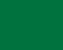
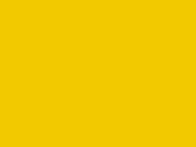
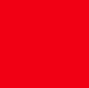

Branding
Sizing system
Spacings
Vi indsat 16px margin på body, for at skabe noget afstand til kanterne.
Font
Vi har valgt skrifttypen Lato og denne skrifttype har vi valgt at benytte os af hele vejen igennem projektet.
Vi 3 custom properties når det kommer til teksten:
--textLarge: 12px;
--textMedium: 10px;
--textSmall: 8px;
Custom Properties
Vi har valgt at lave et design system bygget på custom properties. Vi har lavet custom til spacing, font sizes, colors, button størrelser og radius etc.
Color
--primary: #F8F8F8;--primaryText: #554E4E;
--primaryBtn: #0A82A8;
--green: #006B3D ;
--yellow: #EFC600 ; --red: #E03C32 ; --dark:var(--primaryText); --primary50: rgba(248, 248, 248, 0.5);
Menu Button
--menuButtonWidth: 88px;--menuButtonHeight: 64px;
--menuButtonRadius: 4px;
Button sizes
--buttonSmallHeight: 16px;--buttonHeight: 24px;
--buttonBigHeight: 32px;
--buttonWidth: 32px;
--buttonMediumWidth: 48px;
--buttonLongWidth: 80px;
Text size
--mediumText: 10px;--smallText: 8px;
--largeText: 12px;
Plc screensaver
--screenSaverHeadline: 64px;--screenSaverStatus: 24px;
PLC screen size
--plcWidth: 320px;--plcHeigth: 240px;
Colors

Navn: --green: #006B3D;
Denne farve bliver brugt til at vise en positiv adfærd og at alt kører som det skal.
Navn: --greenPressed: #003D23;
Denne farve bruges som indikator for, at knapper med farven grøn er blevet trykket på.

Navn: --yellow: #EFC600;
Denne farve bruges til at advare pedeller og service teknikkere om, at systemet eller pumpen ikke kører som den skal.

Navn: --red: #E03C32;
Denne farve bruges til at informere pedeller og service teknikkere om, at systemet eller pumpen ikke kører og at der omgående skal skrides til handling. Samtidig bruges den også på nogle enkelte buttons, som et visuelt tegn for en "negativ" handling.
Navn: --redPressed: #851B14;
Denne farve bruges som indikator for, at en knap med farven rød er blevet trykket på.
Navn: --primary: #F8F8F8;
Denne farve er vores body color.
Navn: --primaryBtn: #0A82A8;
Denne farve bruges til knapperne i menuen, pil-højre, pil-venstre og afslut knappen.
Navn: primaryBluePressed: #064B60;
Denne farve bruges som indikator for, at primary-knapperne er trykket på. Giver et respons til brugeren, så der ikke er tvivl om at knappen er blevet trykket på.
Fonts
Vi har kun gjort brug af en font, Lato